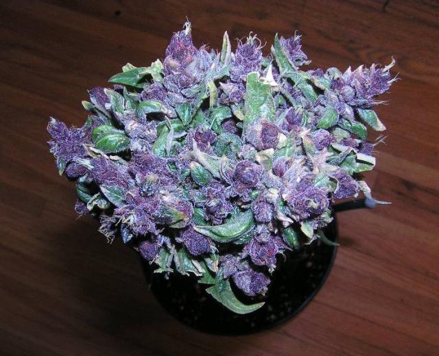
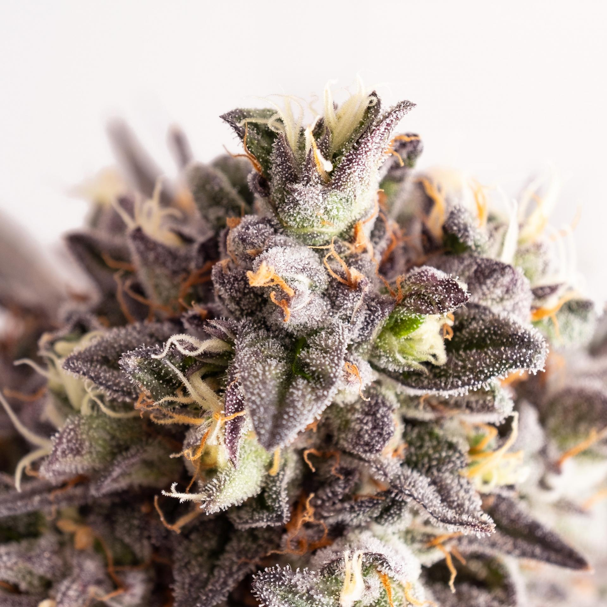

video sobre el cannabis
Estos son diferentes tipos de marihuana de cultivo particular
Hoy veremos los diferentes tiposd e cannavis que existen de forma resumida , acompañanos para descubrir el mundo del cannabis
Cannabis Sativa
es una de las más conocidas y consumidas variedades de planta del cannabis. Es originaria de países con clima tropical, y proviene generalmente de Asia o Sudamérica. Debido a su elevado contenido en delta-9-tetraidrocannabinol o THC, tiene grandes efectos psicoactivos y activadores. Estimula el apetito y la actividad física y social, gracias a las sensaciones de euforia que provoca. Ahora bien, su consumo podría aumentar la posibilidad de desencadenar episodios psicóticos o manifestaciones de trastornos como la esquizofrenia, en personas con este tipo de padecimientos. .
A este tipo de "hierva" se le conoce como "purple" por su colorido rostro , esta es una variante muy poco cumun pero muy cotizada.
gelatto
gelatto es una de las hiervas con mas alto contenido en "THC" probocando que sea una de las hiervas mas caras y una de las mas buscadas , esta es mas dificil de encontrar que "purple" pero estas se pueden encontrar facilmente en tu asociacion mas cercana por elevados precios
Como hemos podido observar , no solo existe un tipo de marihuana ,tenemos infinidad de tipos con infinidad de efectos